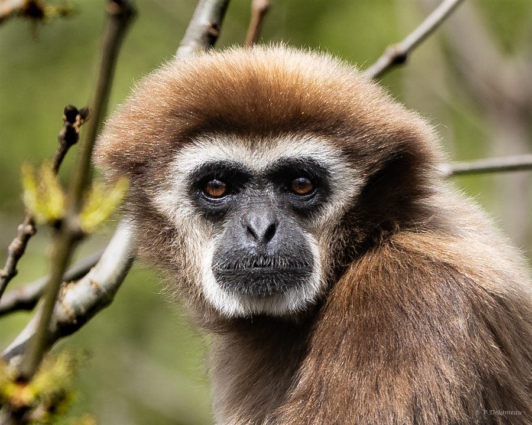

Notre démarche
Un choix
philosophique
engagé
Au Parc Animalier d'Auvergne, nous avons fait un choix philosophique engagé : concentrer toute notre énergie sur la protection des animaux en voie d'extinction dans leur milieu naturel.
Les espèces qui ne sont pas classées en danger sur la liste rouge de l'UICN vont progressivement quitter le Parc. D'autres, qui en ont besoin, prennent leur place au fur et à mesure.
Programmes EEP & EAZA
Maintenir des populations viables hors milieu naturel, en lien avec les coordinateurs internationaux.
Tableau de bord — Horizon 2028
Espèces accueillies
0
Répartition par statut UICN
Préoccupation mineure (LC)0
Quasi menacé (NT)0
Vulnérable (VU)0
En danger (EN)0
En danger critique (CR)0
Éteint en milieu naturel (EW)0
Éteint (EX)0
Échelle des Menaces selon la Liste Rouge de l'UICN
Espèces menacées
LC
Préoccupation mineure
NT
Quasi menacé
VU
Vulnérable
EN
En danger
CR
En danger critique d'extinction
EW
Éteint en milieu naturel
EX
Éteint